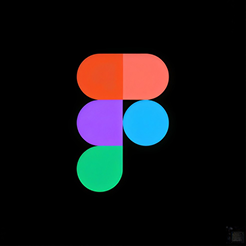
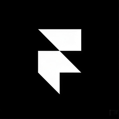
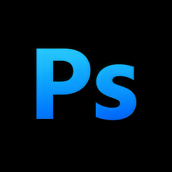
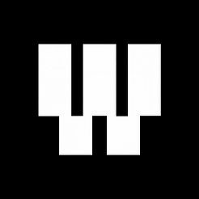
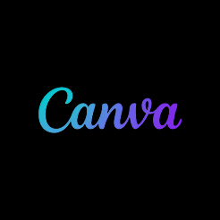
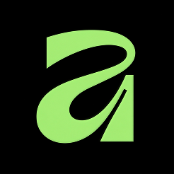
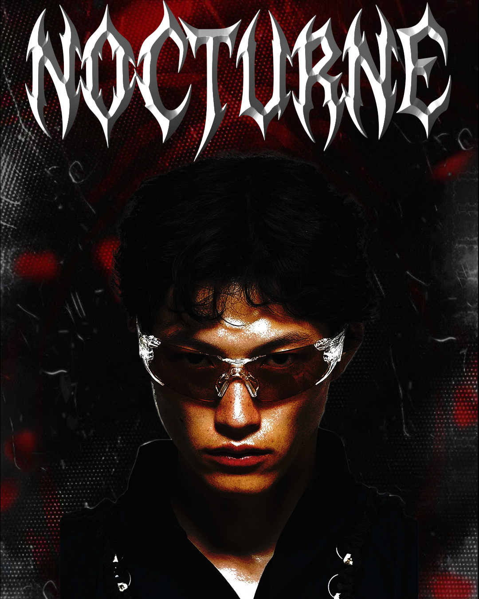
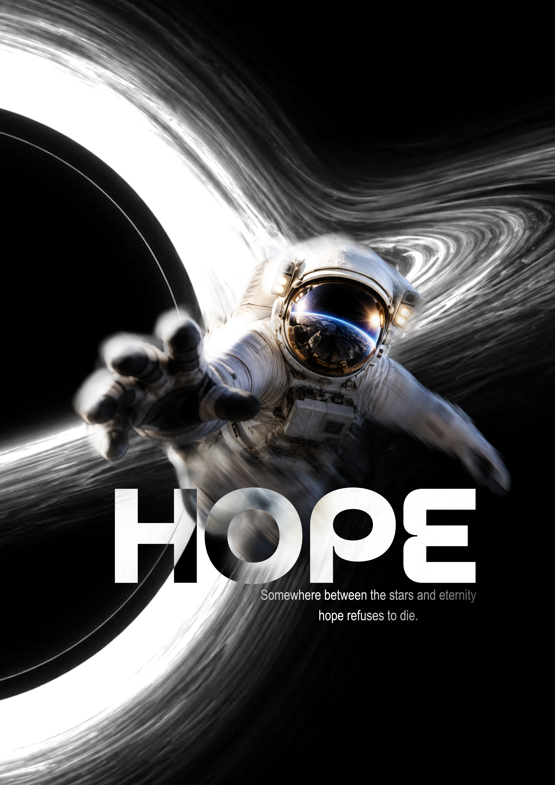
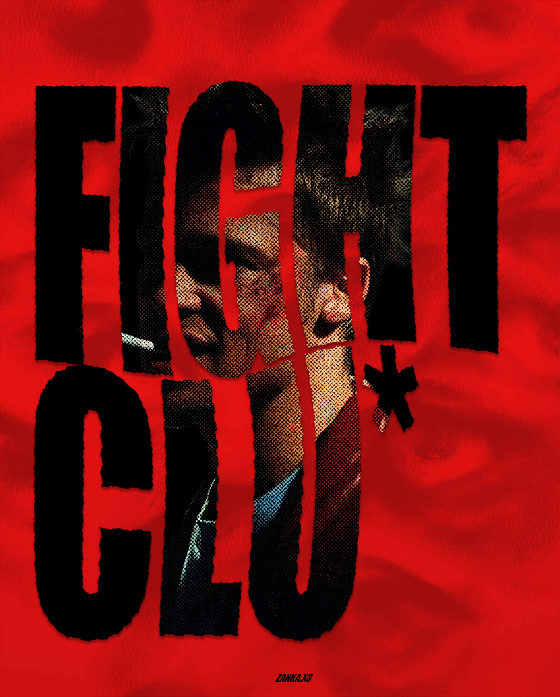
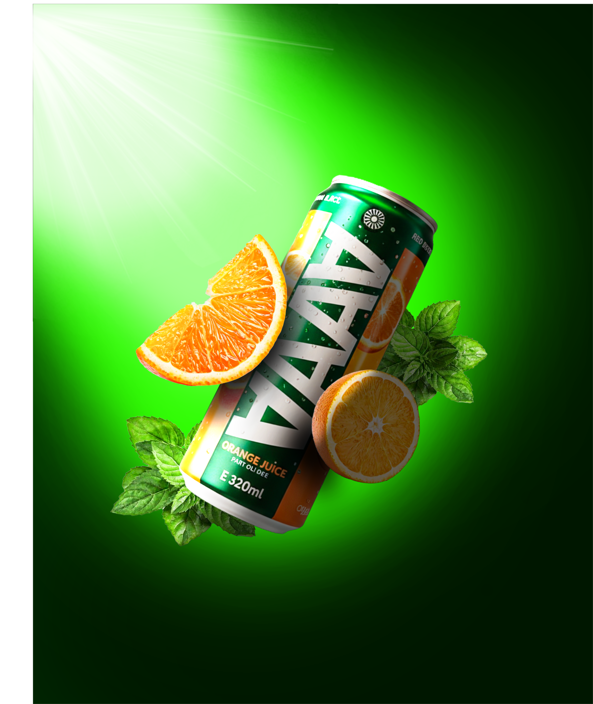

Less Friction.
More Feeling.
I’m a UI/UX Designer focused on creating simple, intuitive, and meaningful digital experiences.
About
Portrait + story
.png)
Adith M S
When design feels invisible, the experience becomes unforgettable.
I got into design because I’ve always been curious about how people use and experience things. That curiosity led me to UI/UX, where I’ve worked on web and mobile experiences, turning ideas and problems into simple, practical designs. When starting a project, I care most about understanding the people who will use it, what they need, and how the experience can make their lives a little easier.
- Based in
- Thrissur, Kerala, India
- Experience
- Fresher
- Currently
- Intern at Knovista
- Education
- BCA, Calicut university
- Languages
- English,Malayalam
- Resume
- Click here !






Selected work
04 projects · 2026
UI/UX
Case studies
Poster design
Selected posters




What I do
Services
User research
Interviews, surveys and usability tests that turn assumptions into evidence.
Interaction design
Flows, wireframes and prototypes that make the product easy to move through.
Visual design
Typography, colour and layout that give the product a clear voice.
Design systems
Component libraries and guidelines that keep teams consistent as they grow.
How I work
Four stages
Understand
I learn about users through research, interviews, and observation to understand their needs, goals, and constraints.
Frame
I analyze research findings to define the core problem, prioritize user needs, and create a clear design plan.
Explore
I sketch ideas, create wireframes, interactive prototypes, and test them with users to gather feedback and improve the design.
Deploy
I provide developers with clear design specs and assets, then measure success through user feedback and performance metrics.
Certifications
Click a certificate to view
Issuer
Certificate name
- Credential ID
- —
- Credential URL
- —
Contact